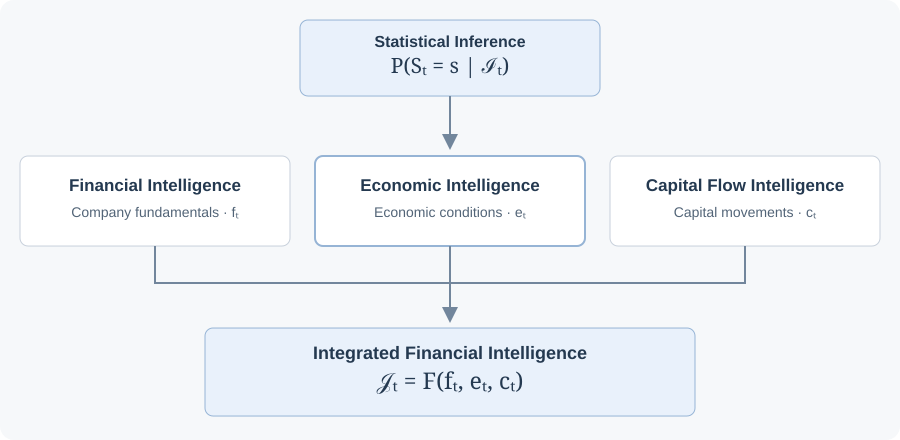

Conditional probability
(1)
What is the probability that the economy is in a particular state, given the information available today?
Norvun is building an integrated intelligence ecosystem across financial statements, economic relationships, capital flows and investment research.

Understand companies
Understand economies
Understand capital movements
How can an economy's unobserved state be inferred from incomplete, temporally dependent evidence?
One research problem within Norvun’s broader system: probabilistic estimation of U.S. business-cycle states, regime transitions and duration uncertainty.
What is the probability that the economy is in a particular state, given the information available today?
What is the distribution of possible economic states at a future horizon?
How long might the current regime persist, given conditional exit probabilities?
How closely do predicted probabilities correspond to observed binary outcomes?
Norvun’s research examines competing statistical approaches through dated information sets and retrospective out-of-sample evaluation.
Economic state estimates can contribute to Economic Intelligence, alongside other analytical outputs. Financial, economic and capital-flow intelligence provide complementary inputs to Norvun Core, the intended integration and synthesis layer.
